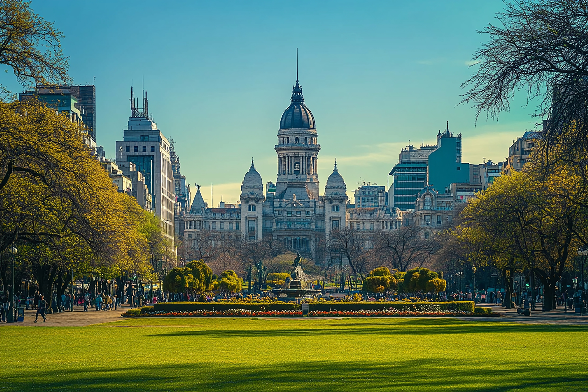
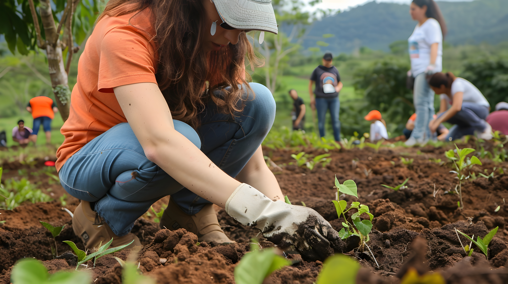
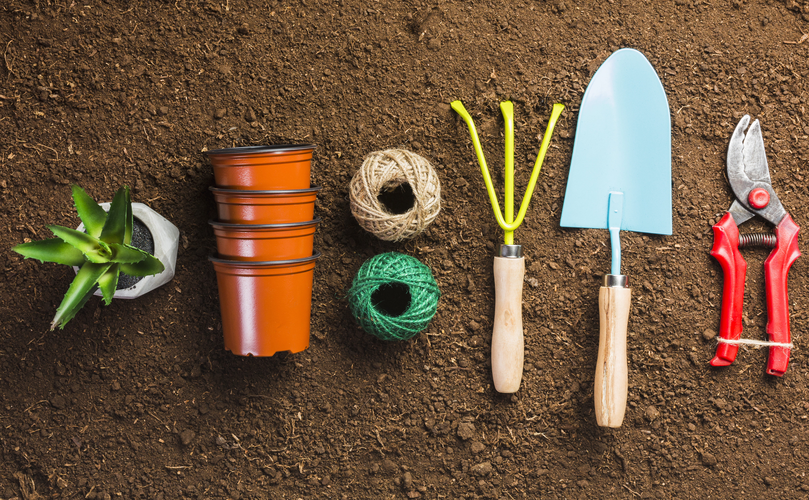

Sustentabilidad
Energías limpias
Promovemos la transición energética e instalaciones comunitarias de equipos solares térmicos.
Ver programaRestauramos el suelo urbano, recuperamos la biodiversidad nativa y reconectamos a la comunidad con su entorno natural.
Las áreas urbanas degradadas y los espacios grises de cemento representan un desafío crítico para el clima y la salud de nuestros barrios. En EcoRaíz, creemos que conservar no es solo proteger lo que queda, sino restaurar activamente lo perdido. Transformamos zonas olvidadas en corredores biológicos vibrantes que devuelven el equilibrio ecológico y mitigan el impacto ambiental en las comunidades.
Nos enfocamos en la protección y restauración activa de ecosistemas locales en Argentina, recuperando suelos erosionados a través de jornadas comunitarias de plantación de flora nativa. Trabajamos para expandir la masa arbórea con especies autóctonas, ayudando a disminuir las islas de calor urbanas y atrayendo nuevamente polinizadores y aves locales.

Este programa está diseñado para vecinos, voluntarios de todas las edades, asambleas de barrio, escuelas técnicas e investigadores interesados en la biodiversidad y el urbanismo sustentable. No hace falta tener conocimientos previos de jardinería; nosotros facilitamos las herramientas pedagógicas y el acompañamiento técnico en cada jornada.

Participá activamente metiendo las manos en la tierra durante nuestras reforestaciones colectivas en plazas y corredores verdes urbanos.

Ayudanos a cuidar los brotes nativos plantados mediante el seguimiento digital de riego y el monitoreo de su crecimiento desde tu celular.
Colaborá financieramente para la compra de herramientas de siembra y el mantenimiento de nuestro vivero comunitario de nativas.

Promovemos la transición energética e instalaciones comunitarias de equipos solares térmicos.
Ver programa
Talleres prácticos y capacitaciones para adoptar hábitos ambientales conscientes.
Ver programaSumate a nuestras reforestaciones de fin de semana, difundí nuestras acciones colectivas o postulate para coordinar un equipo local.
Quiero sumarme hoy